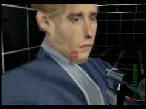

|
| Mysteres
de Perfect Dark : Divers |
| Musiques
Cachées |
| Dans
le Jeu sont cachées 4 Musiques Inédites, et elles
n'apparaissent à aucun moment du Jeu ! Voici une breve description,
et elles sont Téléchargeables ! Un Grand Merci à
Willmistretta pour ça ! Je vous passe comment obtenir ces
Musiques puisqu'il faut un Gameshark... |
| Death |
Une
Musique Beta de Joanna quand elle meurt en Mode Solo. |
Une
Curiosité Absolue ! On dirait un Jingle de Super Mario Bros
! |
|
Vraiment
sublime, la Musique commence comme celle de Deep Sea pour ensuite
se transformer au bout de 46 Secondes en un Theme Magistral ! Je dirait
que c'est une musique de Cinématique puisqu'elle se termine
net et précis sans faire de Boucle comme tous les autres Themes
du Jeu, du moins ceux des Missions. |
| La
Tête Perdue |
Encore
et toujours avec le Gameshark, voilà une Tete retrouvée
dans la Mémoire interne du Jeu. Si je me souviens bien, c'est
la meme que celle d'une Tete de Battle, mais en Noir et Blanc. Voilà
la Photo pour la route, mais c'est pas vraiment un Mystere...
Le Code Gameshark pour la Route ! |

8007CF92 0001
8007CF93 00BD
| Jonathan
Dark |
Allez
dans la Mission Duel, et combattez Jonathan. A cause de son Magnum,
Jonathan n'arrive jamais à vous toucher ! Incroyable mais vrai
! Meme en mettant la Visée à 1000%, il ne se passe rien
! Un autre Truc : lorsque vous visez Jonathan,
il apparait comme Ami (Carré Bleu)
! Un joli Oubli de Programmation... |



| La
Mémoire du Jeu |
En
regardant dans la Memoire du Jeu avec le Game Shark, voici ce que
l'on trouve. Etant donné que Perfect Dark utilise le meme moteur
que Goldeneye, on se disait que l'on retrouverait certains petits
trucs. Mais on ne pensait pas autant !!
Voici regroupées toutes les Options qui devaiant etre présentes dans
le Jeu, ainsi que certaines Options et Codes présents dans Goldeneye.
Pour commencer, des Armes, une Micro Camera (Camspy ?) et ce qui s'apparente
à des mouvements speciaux comme "Désarmer" dans Perfect
Dark. |
Gold PP7
Silver PP7
golden bullets
GoldenEye key
piton gun
flare pistol
stick of dynamite
explosive pen
explosive case
micro camera
bondmove
bondgrab
bondwalk
bondeyes
seenbond
bond2
bondsub
bondbike
Un
truc interessant: Perfect dark utilise le Moteur de Goldeneye. Il
semblerait que Rare ait utilisé le "Bondbike"
pour en faire le Hover-Bike. Pour continuer, des Codes de Goldeneye. |
Invisible
Paintball Mode
Enemy Rockets
2X Rocket L.
2X Grenade L.
2X RC-P90
2X Throwing Knife
2X Hunting Knife
2X Laser
Turbo Mode
Fast Animation
Slow Animation
No Radar (Multi)
Ci-dessous des Codes de Goldeneye inutilisés, dont le Fameux 24ème Code "Line Mode" !
Line Mode
Super X2 Health
Super X2 Armor
Super X10 Health
Ci-dessous d'autres Codes retirés au Dernier Moment.
Slowest Motion
Very Slow Motion
Slow Motion
Normal Motion
Fast Motion
Fastest Motion
Ci-dessous les Fameux Trucs sur le Mode "Perfect Head" !
Load a Saved Head
Make a New Head
Edit a Loaded Head
Edit a Perfect Head
Choose Slot to Edit
Ci-dessous les Options que tout le Monde attendait dans le Battle.
Touch That Box
Show Boxes On Radar
No Doors
Floodlights
Destroyable Walls
Ci-dessous des Armes manquantes pour Perfect Dark !
Dart
Silencer
Maian Grenade
FlashBang
Telescopic Sight
Homing Rocket
Laser Sight
Magazine Extension
MagSec SMG
Ci-dessous quelques bizarreries…
No briefing for this mission
It is now safe to shut off your computer
Another Perfect Crash (tm)
JonesCorp
Happy?
Big King Rocket
On
trouve également, entre les Missions War ! (Guerre) et Maian Sos (Sos
Maian) quelque chose nommé "Retaking
The Institute" (Récuperer l'Institut).
Peut-etre une 5eme Mission supplémentaire ? Ci-dessous,
des Mots relatifs aux Missions Solo... Y en a meme des inédits
qui ont été zappés ! Pour certains, on dirait
pas mal des phrases enlevées au dernier moment pour indiquer
un Objectif réussi ! |
DataDyne Central - Defection
Computer
executive erased.
You've written your last bug, traitor!
Erase Dr. Carrol conversation...
0230 Hours 15 AUG 2023
2023 AD, 2214 Hours Lucerne Tower - dataDyne HQ
dataDyne
Central - Investigation:De
Vries' briefcase
DataDyne Central - Extraction
LIGHTS
OFF
LIGHTS NOW ON
Obtain alpha keycard.
Carrington Villa - Hostage One
PC Gun
Chicago - Stealth
Acquire
diversion target.
Obtain Remote Mine.
Obtain Tracer Bug.
dataDyne Central Divisional HQ Chicago Il USA.
G5 Building - Reconnaisance
Obtain
alpha keycard.
Level 1 keycard
Level 2 keycard
Obtain Door Exploder.
Door Exploder
Picked up Door Exploder.
Picked up Detonator.
Obtain DAT tape.
The bomb has been detonated...
Well, at least I won't know if I'm doing anything wrong.
Area
51 - Rescue
Obtain
op room keycard. Please stop! I'm not supposed to die. She... Arggghhh!
Of course he's going to hear of it, you moron. I've just got into
his top secret base, and now I'm stealing his alien.
Air
Force One - Antiterrorism
Obtain
Crossbow.
Adrenaline pill
Picked up an adrenaline pill.
Deep Sea - Nullify Threat
Elvis
has unlocked the door.
Antibody masking has been obtained.
This antibody masking will protect us from the automatic defenses.
Carrington
Institute - Defense
Obtain
sensitive info.
Sensitive info
Picked up sensitive info.
You have been given a Devastator.
Attack Ship - Covert Assault
All
hangar Skedar have been killed.
OK, we're in. I'll meet you in the hangar.
Skedar Ruins - Battle Shrine
Obtain
Night Vision.
Obtain Scanner.
Ci-dessous, divers autres Textes.
Dummy.
No briefing for this mission.
It is now safe to shut off your computer.
Another Perfect Crash (tm)
JonesCorp
Happy?
On trouve aussi parmi les Noms des Niveaux de Battle le mot
"Rooftops".
Une Arène enlevée ?